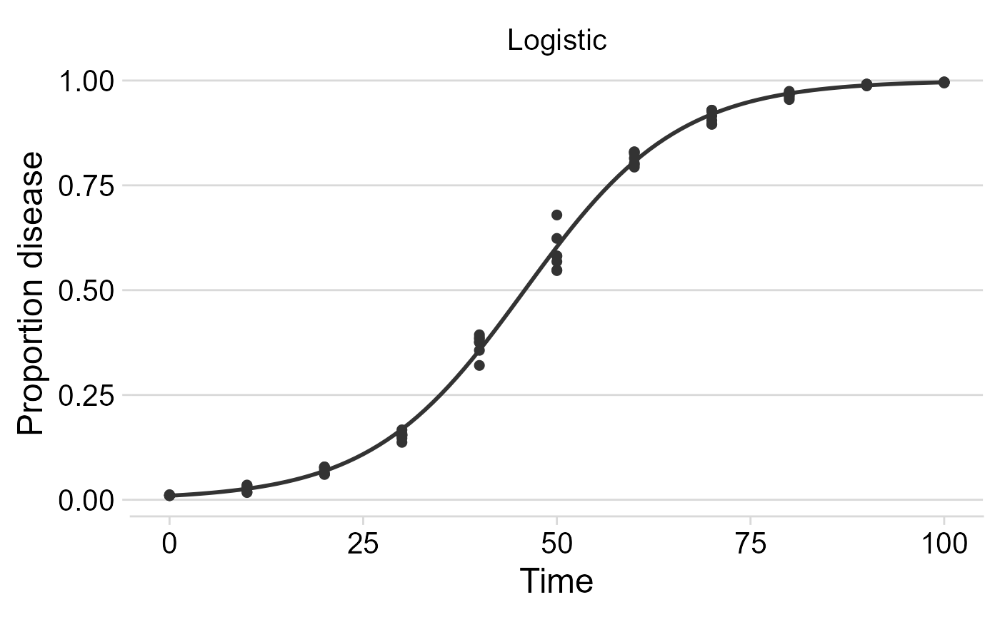

Base functions
epifitter provides functions for the fit of (non-flexible) two-parameter population dynamics models to disease progress curve (DPC) data: exponential, monomolecular, logistic and Gompertz.
The goal of fitting these models to DPCs is to estimate numerically meaningful parameters: y0 that represents primary inoculum and r, representing the apparent infection rate. Hence, the importance of choosing the model that best describe the epidemics to better understand its proterties and compare epidemics.
Two approaches can be used to obtain the parameters:
- Linear regression models that are fitted to a specific transformation of the disease data according to each of the models.
- Non-linear regression models fitted to original data
Both approaches are available in epifitter. The simplest way to fit these models to single epidemic data is using the fit_lin() and fit_nlin() functions. For the latter, the alternative fit_nlin2() allows to estimate a third parameter, upper asymptote, when maximum disease intensity is not close to 100%. The fit_multi() function is the most flexible and allows to fit all models to multiple epidemic datasets.
First, we need to load the packages we’ll need for this tutorial.
Basic usage
Dataset
To use epifitter data at least two variables are needed, one representing the time when each of the multiple assessments of disease intensity were performed during the course of the epidemics and the other representing a disease intensity variable normalized to proportion (e.g. incidence, severity, prevalence). For the case of designed experiments with replicates, a third variable is needed (eg. rep).
Let’s produce a fake DPC dataset for one epidemics measured at replicated plots. The simulated data resemble a polyciclic epidemics of sigmoid shape. We can do that using the epifitter sim_logistic() function of epifitter (more about ?sim_logistic here).
dpcL <- sim_logistic( N = 100, # duration of the epidemics in days y0 = 0.01, # disease intensity at time zero dt = 10, # interval between assessments r = 0.1, # apparent infection rate alpha = 0.2, # level of noise n = 7 # number of replicates )
Let’s give a look at the simulated dataset.
head(dpcL)
## replicates time y random_y
## 1 1 0 0.01000000 0.01000000
## 2 1 10 0.02672668 0.02449389
## 3 1 20 0.06946279 0.02822546
## 4 1 30 0.16868385 0.15912775
## 5 1 40 0.35549349 0.33097535
## 6 1 50 0.59989486 0.58452830The dpc_L object generated using sim_logistic() is a dataframe with four columns. The y variable is a vector for the disease intensity as proportion (0 < y < 1). To facilitate visualization, let’s make a plot using the ggplot function of the ggplot2 package.
ggplot( dpcL, aes(time, y, group = replicates ) ) + geom_point(aes(time, random_y), shape = 1) + # plot the replicate values geom_point(color = "steelblue", size = 2) + geom_line(color = "steelblue") + labs( title = "Simulated 'complete' epidemics of sigmoid shape", subtitle = "Produced using sim_logistic()" )

Linear regression using fit_lin()
The fit_lin() requires at least the time and y arguments. In the example, we will call the random_y which represents the replicates. A quick way to call these variables attached to the dataframe is shown below.
f_lin <- fit_lin( time = dpcL$time, y = dpcL$random_y )
fit_lin() outputs a list object which contains several elements. Three elements of the list are shown by default: stats of model fit, Infection rate and Initial Inoculum
f_lin
## Results of fitting population models
##
## Stats:
## CCC r_squared RSE
## Logistic 0.9978 0.9956 0.2159
## Gompertz 0.9765 0.9541 0.5089
## Monomolecular 0.9345 0.8770 0.6748
## Exponential 0.9115 0.8373 0.6309
##
## Infection rate:
## Estimate Std.error Lower Upper
## Logistic 0.10091157 0.0007781774 0.09936136 0.09936136
## Gompertz 0.07236978 0.0018338394 0.06871658 0.06871658
## Monomolecular 0.05623889 0.0024316471 0.05139480 0.05139480
## Exponential 0.04467268 0.0022736845 0.04014327 0.04014327
##
## Initial inoculum:
## Estimate Linearized lin.SE Lower Upper
## Logistic 0.0099114483 -4.604104 0.04603759 9.050752e-03 0.0108530977
## Gompertz 0.0000250408 -2.360383 0.10849140 1.943265e-06 0.0001963339
## Monomolecular -1.8536755312 -1.048608 0.14385819 -2.800711e+00 -1.1426162362
## Exponential 0.0285671998 -3.555496 0.13451299 2.185207e-02 0.0373458882Model fit stats
The Stats element of the list shows how each of the four models predicted the observations based on three measures:
- Lin’s concordance correlation coefficient
CCC(Lin 2000), a measure of agreement that takes both bias and precision into account - Coefficient of determination
r_squared(R2), a measure of precision - Residual standard deviation
RSEfor each model.
The four models are sorted from the high to the low CCC. As expected because the sim_logistic function was used to create the synthetic epidemic data, the the Logistic model was superior to the others.
Model coefficients
The estimates, and respective standard error and upper and lower 95% confidence interval, for the two coefficients of interest are shown in the Infection rate and Initial inoculum elements. For the latter, both the back-transformed (estimate) and the linearized estimate are shown.
Global stats
The element f_lin$stats_all provides a wide format dataframe with all the stats for each model.
f_lin$stats_all
## # A tibble: 4 x 14
## best_model model r r_se r_ci_lwr r_ci_upr v0 v0_se r_squared RSE
## <int> <chr> <dbl> <dbl> <dbl> <dbl> <dbl> <dbl> <dbl> <dbl>
## 1 1 Logi~ 0.101 7.78e-4 0.0994 0.102 -4.60 0.0460 0.996 0.216
## 2 2 Gomp~ 0.0724 1.83e-3 0.0687 0.0760 -2.36 0.108 0.954 0.509
## 3 3 Mono~ 0.0562 2.43e-3 0.0514 0.0611 -1.05 0.144 0.877 0.675
## 4 4 Expo~ 0.0447 2.27e-3 0.0401 0.0492 -3.56 0.135 0.837 0.631
## # ... with 4 more variables: CCC <dbl>, y0 <dbl>, y0_ci_lwr <dbl>,
## # y0_ci_upr <dbl>Model predictions
The predicted values are stored as a dataframe in the data element called using the same $ operator as above. Both the observed and (y) and the back-transformed predictions (predicted) are shown for each model. The linearized value and the residual are also shown.
head(f_lin$data)
## time y model linearized predicted residual
## 1 0 0.01000000 Exponential -4.6051702 0.02856720 -0.01856720
## 2 10 0.02449389 Exponential -3.7093315 0.04465588 -0.02016199
## 3 20 0.02822546 Exponential -3.5675310 0.06980550 -0.04158004
## 4 30 0.15912775 Exponential -1.8380479 0.10911905 0.05000870
## 5 40 0.33097535 Exponential -1.1057114 0.17057350 0.16040185
## 6 50 0.58452830 Exponential -0.5369501 0.26663831 0.31788999Plot of predictions
The plot_fit() produces, by default, a panel of plots depicting the observed and predicted values by all fitted models. The arguments pont_size and line_size that control for the size of the dots for the observation and the size of the fitted line, respectively.
plot_lin <- plot_fit(f_lin, point_size = 2, line_size = 1 ) # Default plots plot_lin

Publication-ready plots
The plots are ggplot2 objects which can be easily customized by adding new layers that override plot paramaters as shown below. The argument models allows to select the models(s) to be shown on the plot. The next plot was customized for the logistic model.
# Customized plots plot_fit(f_lin, point_size = 2, line_size = 1, models = "Logistic")+ theme_minimal_grid(font_size =18) + scale_x_continuous(limits = c(0,100))+ scale_color_grey()+ theme(legend.position = "none")+ labs( x = "Time", y = "Proportion disease " )

Non-linear regression
Two-parameters
The fit_nlin() function uses the Levenberg-Marquardt algorithm for least-squares estimation of nonlinear parameters. In addition to time and disease intensity, starting values for y0 and r should be given in the starting_par argument. The output format and interpretation is analogous to the fit_lin().
NOTE: If you encounter error messages saying “matrix at initial parameter estimates”, try to modify the starting values for the parameters to solve the problem.
f_nlin <- fit_nlin( time = dpcL$time, y = dpcL$random_y, starting_par = list(y0 = 0.01, r = 0.03) ) f_nlin
## Results of fitting population models
##
## Stats:
## CCC r_squared RSE
## Logistic 0.9984 0.9968 0.0231
## Gompertz 0.9962 0.9937 0.0355
## Monomolecular 0.9133 0.8649 0.1556
## Exponential 0.8876 0.8254 0.1750
##
## Infection rate:
## Estimate Std.error Lower Upper
## Logistic 0.10087691 0.001909021 0.09707395 0.09707395
## Gompertz 0.07070902 0.001991520 0.06674171 0.06674171
## Monomolecular 0.02272941 0.001509464 0.01972241 0.01972241
## Exponential 0.01904029 0.001391692 0.01626789 0.01626789
##
## Initial inoculum:
## Estimate Std.error Lower Upper
## Logistic 9.499285e-03 8.517980e-04 7.802416e-03 1.119615e-02
## Gompertz 7.811333e-08 1.140384e-07 -1.490628e-07 3.052894e-07
## Monomolecular -1.916872e-01 4.654730e-02 -2.844142e-01 -9.896027e-02
## Exponential 1.809766e-01 2.093786e-02 1.392662e-01 2.226869e-01We can check the results using plot_fit.

Estimating K (maximum disease)
In many epidemics the last measure (final time) of a DPC does not reach the maximum intensity and, for this reason, estimation of maximum asymptote (carrying capacity K) may be necessary. The fin_lin2() provides an estimation of K in addition to the estimates provided by fit_lin().
Before demonstrating the function, we can transform our simulated data by creating another variable with y_random2 with maximum about 0.8 (80%). Simplest way is to multiply the y_random by 0.8.
dpcL2 = dpcL %>% mutate(random_y = random_y * 0.8)
Then we run the fit_nlin2() for the new dataset.
f_nlin2 <- fit_nlin2( time = dpcL2$time, y = dpcL2$random_y, starting_par = list(y0 = 0.01, r = 0.2, K = 0.6) ) f_nlin2
## Results of fitting population models
##
## Stats:
## CCC r_squared RSE
## Logistic 0.9984 0.9968 0.0186
## Gompertz 0.9717 0.9693 0.0747
## Monomolecular 0.9460 0.9043 0.1022
##
## Infection rate:
## Estimate Std.error Lower Upper
## Logistic 0.1006254 0.002309373 0.09602389 0.09602389
## Gompertz 0.1062359 0.013301630 0.07973187 0.07973187
## Monomolecular 0.0162343 0.003110982 0.01003554 0.01003554
##
## Initial inoculum:
## Estimate Std.error Lower Upper
## Logistic 7.670778e-03 7.813739e-04 6.113856e-03 9.227699e-03
## Gompertz 9.056236e-23 2.314785e-21 -4.521747e-21 4.702872e-21
## Monomolecular -1.454422e-01 3.256654e-02 -2.103325e-01 -8.055199e-02
##
## Maximum disease intensity:
## Estimate Std.error Lower Upper
## Logistic 0.8008791 0.00458352 0.7917463 0.8100120
## Gompertz 0.6793966 0.01559481 0.6483232 0.7104699
## Monomolecular 1.0000000 0.10836735 0.7840733 1.2159267plot_fit(f_nlin2)

NOTE: The exponential model is not included because it doesn’t have a maximum asymptote. The estimated value of
Kis the expected 0.8.
Fit models to multiple DPCs
Most commonly, there are more than one epidemics to analyse either from observational or experimental studies. When the goal is to fit a common model to all curves, the fit_multi() function is in hand. Each DPC needs an unique identified to further combined in a single data frame.
Data
Let’s use the sim_ family of functions to create three epidemics and store the data in a single data.frame. The Gompertz model was used to simulate these data. Note that we allowed to the y0 and r parameter to differ the DPCs. We should combine the three DPCs using the bind_rows() function and name the identifier (.id), automatically created as a character vector, for each epidemics as ‘DPC’.
epi1 <- sim_gompertz(N = 60, y0 = 0.001, dt = 5, r = 0.1, alpha = 0.4, n = 4) epi2 <- sim_gompertz(N = 60, y0 = 0.001, dt = 5, r = 0.12, alpha = 0.4, n = 4) epi3 <- sim_gompertz(N = 60, y0 = 0.003, dt = 5, r = 0.14, alpha = 0.4, n = 4) multi_epidemic <- bind_rows(epi1, epi2, epi3, .id = "DPC" ) head(multi_epidemic)
## DPC replicates time y random_y
## 1 1 1 0 0.00100000 0.001295858
## 2 1 1 5 0.01515505 0.001000000
## 3 1 1 10 0.07878459 0.032435418
## 4 1 1 15 0.21411521 0.136791438
## 5 1 1 20 0.39266393 0.178387679
## 6 1 1 25 0.56723412 0.577854857We can visualize the three DPCs in a same plot
p_multi <- ggplot(multi_epidemic, aes(time, y, shape = DPC, group = DPC))+ geom_point(size =2)+ geom_line()+ theme_minimal_grid(font_size =18) + labs( x = "Time", y = "Proportion disease " ) p_multi

Or use facet_wrap() for ploting them separately.
p_multi + facet_wrap(~ DPC, ncol = 1)

Using fit_multi()
fit_multi() requires at least four arguments: time, disease intensity (as proportion), data and the curve identifier (strata_cols). The latter argument accepts one or more strata include as c("strata1",strata2"). In the example below, the stratum name is DPC, the name of the variable.
By default, the linear regression is fitted to data but adding another argument nlin = T, the non linear regressions is fitted instead.
multi_fit <- fit_multi( time_col = "time", intensity_col = "random_y", data = multi_epidemic, strata_cols = "DPC" )
All parameters of the list can be returned using the $ operator as below.
head(multi_fit$Parameters)
## DPC best_model model r r_se r_ci_lwr r_ci_upr
## 1 1 1 Gompertz 0.10471764 0.003125643 0.09843960 0.11099568
## 2 1 2 Logistic 0.16866264 0.007317002 0.15396601 0.18335927
## 3 1 3 Monomolecular 0.07480435 0.003940794 0.06688903 0.08271967
## 4 1 4 Exponential 0.09385830 0.009071196 0.07563826 0.11207833
## 5 2 1 Gompertz 0.12058008 0.004285402 0.11197259 0.12918756
## 6 2 2 Logistic 0.17428067 0.007987730 0.15823684 0.19032450
## v0 v0_se r_squared RSE CCC y0
## 1 -2.1248103 0.1105082 0.9573537 0.4216722 0.9782123 0.0002314125
## 2 -5.0231357 0.2586951 0.9139916 0.9871175 0.9550633 0.0065407857
## 3 -0.7082137 0.1393281 0.8781434 0.5316422 0.9351186 -1.0303612845
## 4 -4.3149220 0.3207152 0.6816448 1.2237713 0.8106882 0.0133675925
## 5 -1.9589092 0.1515118 0.9405974 0.5781323 0.9693895 0.0008320758
## 6 -4.3425339 0.2824089 0.9049518 1.0776036 0.9501047 0.0128366154
## y0_ci_lwr y0_ci_upr
## 1 2.889676e-05 0.001224817
## 2 3.900509e-03 0.010948636
## 3 -1.686025e+00 -0.534746183
## 4 7.019260e-03 0.025457459
## 5 6.678118e-05 0.005348560
## 6 7.320212e-03 0.022416225Similarly, all data can be returned.
head(multi_fit$Data)
## DPC time y model linearized predicted residual
## 1 1 0 0.001295858 Exponential -6.6485822 0.01336759 -0.012071734
## 2 1 5 0.001000000 Exponential -6.9077553 0.02137292 -0.020372922
## 3 1 10 0.032435418 Exponential -3.4285043 0.03417233 -0.001736912
## 4 1 15 0.136791438 Exponential -1.9892979 0.05463681 0.082154633
## 5 1 20 0.178387679 Exponential -1.7237961 0.08735666 0.091031023
## 6 1 25 0.577854857 Exponential -0.5484326 0.13967115 0.438183711If nonlinear regression is preferred, the nlim argument should be set to TRUE
multi_fit2 <- fit_multi( time_col = "time", intensity_col = "random_y", data = multi_epidemic, strata_cols = "DPC", nlin = TRUE)
## Warning in log(y0/1): NaNs produzidos
## Warning in log(y0/1): NaNs produzidos
## Warning in log(y0/1): NaNs produzidos
## Warning in log(y0/1): NaNs produzidos
## Warning in log(y0/1): NaNs produzidos
## Warning in log(y0/1): NaNs produzidos
## Warning in log(y0/1): NaNs produzidos
## Warning in log(y0/1): NaNs produzidoshead(multi_fit2$Parameters)
## DPC model y0 y0_se r r_se df
## 1 1 Gompertz 0.0003123797 0.0003340278 0.10135570 0.005396078 50
## 2 1 Logistic 0.0249681871 0.0057429169 0.14575867 0.008959482 50
## 3 1 Monomolecular -0.1935372775 0.0498910859 0.04092054 0.002831650 50
## 4 1 Exponential 0.2101698712 0.0285405252 0.02897057 0.002789133 50
## 5 2 Gompertz 0.0006720442 0.0004493314 0.11660718 0.004452600 50
## 6 2 Logistic 0.0281174675 0.0044034932 0.16838424 0.007290171 50
## CCC r_squared RSE y0_ci_lwr y0_ci_upr r_ci_lwr
## 1 0.9881883 0.9766320 0.05968670 -0.0003585350 0.0009832944 0.09051736
## 2 0.9853508 0.9726481 0.06625296 0.0134331990 0.0365031752 0.12776302
## 3 0.9364293 0.8960236 0.13078984 -0.2937464728 -0.0933280823 0.03523300
## 4 0.8660174 0.7926202 0.18271270 0.1528445393 0.2674952031 0.02336843
## 5 0.9946562 0.9894417 0.04011391 -0.0002304645 0.0015745528 0.10766387
## 6 0.9936953 0.9882235 0.04341940 0.0192727910 0.0369621439 0.15374150
## r_ci_upr best_model
## 1 0.11219404 1
## 2 0.16375432 2
## 3 0.04660808 3
## 4 0.03457271 4
## 5 0.12555049 1
## 6 0.18302697 2Want to estimate K?
If you want to estimate K, set nlin = TRUE and estimate_K = TRUE.
NOTE: If you do not set both arguments
TRUE,Kwill not be estimated, becausenlindefaut isFALSE. Also remember that when estimating K, we don’t fit the Exponential model.
multi_fit_K <- fit_multi( time_col = "time", intensity_col = "random_y", data = multi_epidemic, strata_cols = "DPC", nlin = T, estimate_K = T )
## Warning in log(y0/K): NaNs produzidos
## Warning in log(y0/K): NaNs produzidos
## Warning in log(y0/K): NaNs produzidos
## Warning in log(y0/K): NaNs produzidos
## Warning in log(y0/K): NaNs produzidos
## Warning in log(y0/K): NaNs produzidos
## Warning in log(y0/K): NaNs produzidos
## Warning in log(y0/K): NaNs produzidoshead(multi_fit_K$Parameters)
## DPC model y0 y0_se r r_se K
## 1 1 Gompertz 0.0003123811 0.0004265910 0.10135568 0.008278361 1
## 2 1 Logistic 0.0249681192 0.0065858365 0.14575881 0.011250755 1
## 3 1 Monomolecular -0.1935450013 0.0555028330 0.04092122 0.007730439 1
## 4 2 Gompertz 0.0006720454 0.0005326923 0.11660717 0.006063999 1
## 5 2 Logistic 0.0281174939 0.0048304045 0.16838420 0.008526985 1
## 6 2 Monomolecular -0.1760707071 0.0499881328 0.04946718 0.007128831 1
## K_se df CCC r_squared RSE y0_ci_lwr y0_ci_upr
## 1 0.02271452 49 0.9881883 0.9766320 0.06029268 -0.0005448856 0.001169648
## 2 0.02057867 49 0.9853508 0.9726481 0.06692560 0.0117333853 0.038202853
## 3 0.08440518 49 0.9364298 0.8960216 0.13211769 -0.3050821201 -0.082007883
## 4 0.01192665 49 0.9946562 0.9894417 0.04052117 -0.0003984398 0.001742531
## 5 0.01099847 49 0.9936953 0.9882235 0.04386022 0.0184104327 0.037824555
## 6 0.05522715 49 0.9513254 0.9212828 0.11618316 -0.2765256209 -0.075615793
## r_ci_lwr r_ci_upr K_ci_lwr K_ci_upr best_model
## 1 0.08471969 0.11799167 0.9543535 1.045647 1
## 2 0.12314957 0.16836805 0.9586456 1.041354 2
## 3 0.02538632 0.05645611 0.8303814 1.169619 3
## 4 0.10442110 0.12879323 0.9760325 1.023968 1
## 5 0.15124858 0.18551982 0.9778977 1.022102 2
## 6 0.03514126 0.06379310 0.8890169 1.110983 3Graphical outputs
Use ggplot2 to produce elegant data visualizations of models curves and the estimated parameters.
DPCs and fitted curves
The original data and the predicted values by each model are stored in multi_fit$Data. A nice plot can be produced as follows:
multi_fit$Data %>% ggplot(aes(time, predicted, color = DPC)) + geom_point(aes(time, y), color = "gray") + geom_line(size = 1) + facet_grid(DPC ~ model, scales = "free_y") + theme_light() + coord_cartesian(ylim = c(0, 1))

Using the dplyr function filter only the model of interest can be chosen for plotting.
multi_fit$Data %>% filter(model == "Gompertz") %>% ggplot(aes(time, predicted, color = DPC)) + geom_point(aes(time, y), color = "gray", size = 2 ) + geom_line(size = 1.2) + theme_light() + labs( x = "Time", y = "Disease Intensity" )

Apparent infection rate
The multi_fit$Parameters element is where all stats and parameters as stored. Let’s plot the estimates of the apparent infection rate.
multi_fit$Parameters %>% filter(model == "Gompertz") %>% ggplot(aes(DPC, r)) + geom_point(size = 3) + geom_errorbar(aes(ymin = r_ci_lwr, ymax = r_ci_upr), width = 0, size = 1 ) + labs( x = "Time", y = "Apparent infection rate" ) + theme_light()